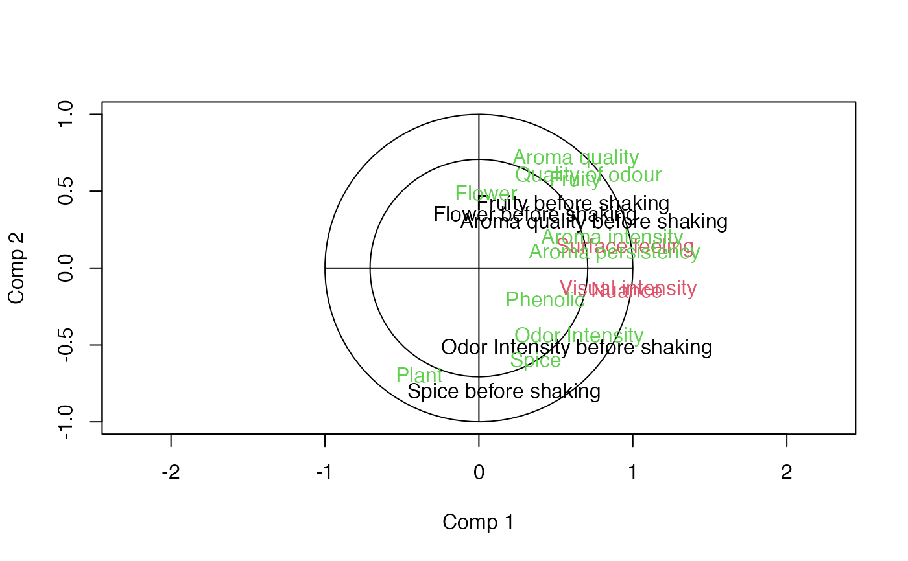
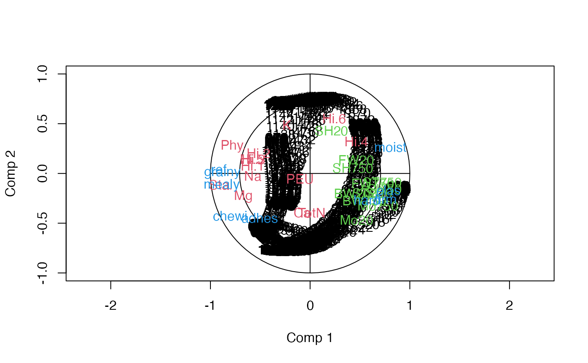

Plotting procedures for multiblock objects.
Usage
# S3 method for class 'multiblock'
scoreplot(
object,
comps = 1:2,
block = 0,
labels,
identify = FALSE,
type = "p",
xlab,
ylab,
main,
...
)
# S3 method for class 'multiblock'
loadingplot(
object,
comps = 1:2,
block = 0,
scatter = TRUE,
labels,
identify = FALSE,
type,
lty,
lwd = NULL,
pch,
cex = NULL,
col,
legendpos,
xlab,
ylab,
main,
pretty.xlabels = TRUE,
xlim,
...
)
loadingweightplot(object, main = "Loading weights", ...)
# S3 method for class 'multiblock'
biplot(
x,
block = 0,
comps = 1:2,
which = c("x", "y", "scores", "loadings"),
var.axes = FALSE,
xlabs,
ylabs,
main,
...
)
corrplot(object, ...)
# Default S3 method
corrplot(object, ...)
# S3 method for class 'mvr'
corrplot(object, ...)
# S3 method for class 'multiblock'
corrplot(
object,
comps = 1:2,
labels = TRUE,
col = 1:5,
plotx = TRUE,
ploty = TRUE,
blockScores = FALSE,
...
)Arguments
- object
multiblockobject.- comps
integervector giving components, within block, to plot.- block
integer/characterfor block selection.- labels
characterindicating if "names" or "numbers" should be plot symbols (optional).- identify
logicalfor activatingidentifyto interactively identify points.- type
characterfor selecting type of plot to make. Defaults to "p" (points) for scatter plots and "l" (lines) for line plots.- xlab
charactertext for x labels.- ylab
charactertext for y labels.- main
charactertext for main header.- ...
Not implemented.
- scatter
logicalindicating if a scatterplot of loadings should be made (default = TRUE).- lty
Vector of line type specifications (see
parfor details).- lwd
numericvector of line width specifications.- pch
Vector of point specifications (see
pointsfor details).- cex
numericvector of plot size expansions (seeparfor details).- col
integervector of symbol/line colours (seeparfor details).- legendpos
characterindicating legend position (ifscatteris FALSE), e.g.legendpos = "topright".- pretty.xlabels
logicalindicating if xlabels should be more nicely plotted (default = TRUE).- xlim
numericvector of length two, with the x limits of the plot (optional).- x
multiblockobject.- which
characterfor selecting type of biplot ("x" = default, "y", "scores", "loadings").- var.axes
logicalindicating if second axes of a biplot should have arrows.- xlabs
charactervector for labelling first set of biplot points (optional).- ylabs
charactervector for labelling second set of biplot points (optional).- plotx
locicalorinteger/character. Whether to plot the \(X\) correlation loadings, optionally which block(s). Defaults toTRUE.- ploty
logical. Whether to plot the \(Y\) correlation loadings. Defaults toTRUE.- blockScores
logical. Correlation loadings from blockScores (default = FALSE).
Details
Plot functions for scores, loadings and loading.weights based
on the functions found in the pls package.
See also
Overviews of available methods, multiblock, and methods organised by main structure: basic, unsupervised, asca, supervised and complex.
Common functions for computation and extraction of results are found in multiblock_results.
Examples
data(wine)
sc <- sca(wine[c('Smell at rest', 'View', 'Smell after shaking')], ncomp = 4)
loadingplot(sc, block = 1, labels = "names", scatter = TRUE)
scoreplot(sc, labels = "names")
corrplot(sc)

data(potato)
so <- sopls(Sensory ~ NIRraw + Chemical + Compression, data=potato, ncomp = c(2,2,2),
max_comps = 6, validation = "CV", segments = 10)
scoreplot(so, ncomp = c(2,1), block = 3, labels = "names")
corrplot(pcp(so, ncomp = c(2,2,2)))
